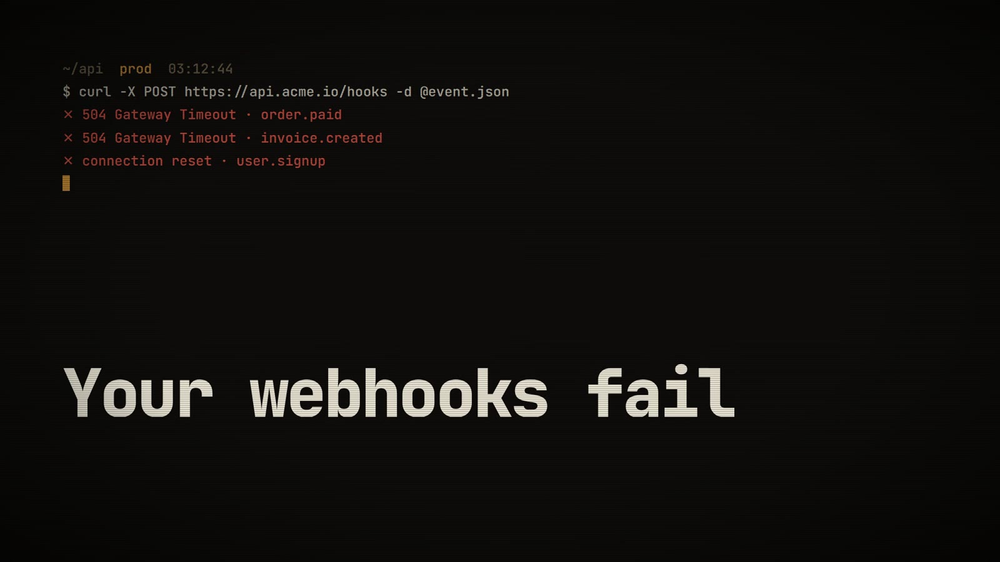
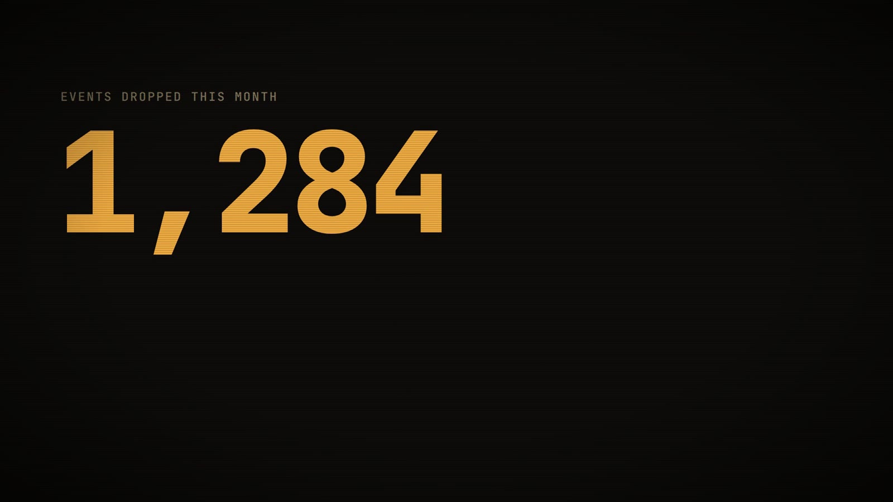
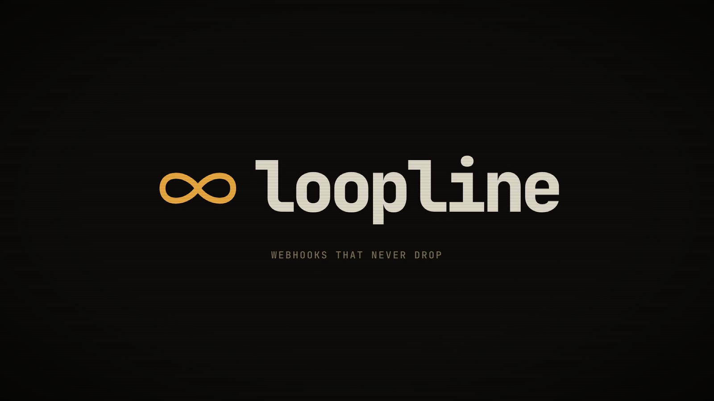
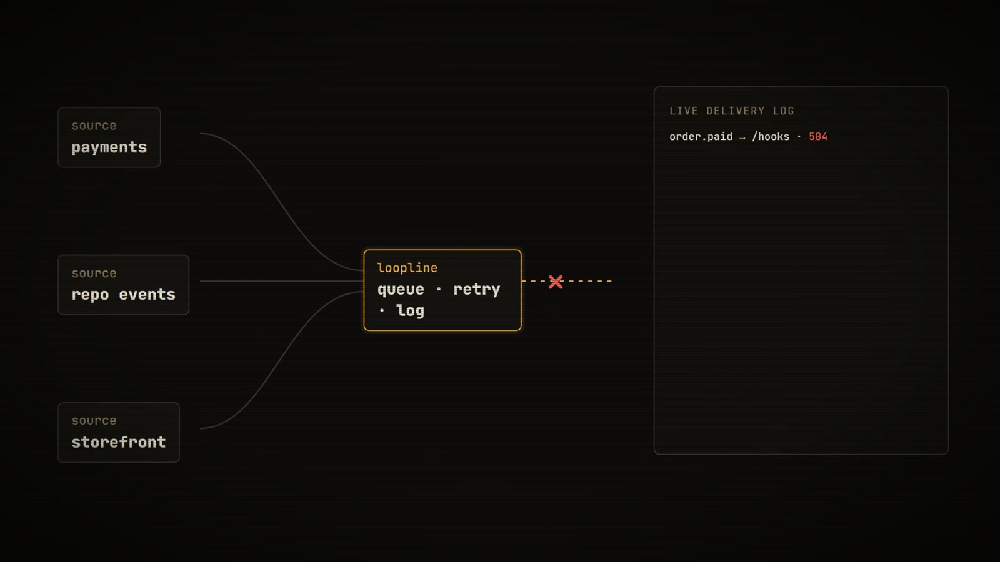
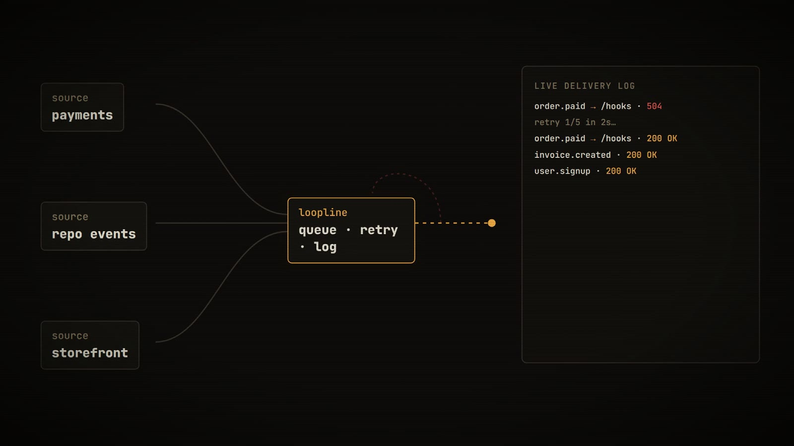
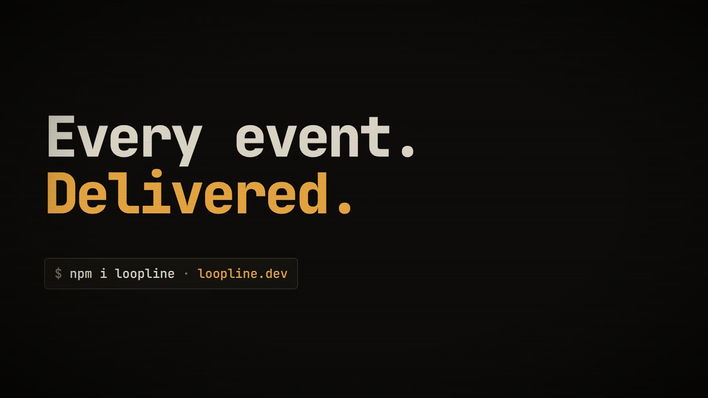

Loopline
Webhook infrastructure for developers. A terminal-native film that speaks the audience's language: logs, retries and a status that turns green.
Loopline is a fictional brand. We wrote the brief ourselves and built the film to the same standard and process as client work. All people, stats and quotes in it are invented.
The brief
Developers skip marketing videos. To hold them, the film has to look like their own tools and show the mechanism, not metaphors. No floating clouds, no people pointing at screens.
The idea
It opens at 3:12 am in a terminal, with 504s scrolling past. A counter lands the cost: 1,284 events dropped this month. The logo draws itself as an infinity loop, then the product works in front of you: events flow in, one delivery fails, Loopline retries, the log turns green.






How it's made
The type is almost all monospace, set in JetBrains Mono on a warm near-black with a single amber signal colour. Typing, counters and the delivery log are driven frame-by-frame in code, so every character is deterministic and sharp. Subtle scanlines and a vignette give it the feel of a real screen.
Type: JetBrains Mono · Instrument Serif
Credits
Concept, script, art direction, animation, sound design and edit: NexusPulse Studio.